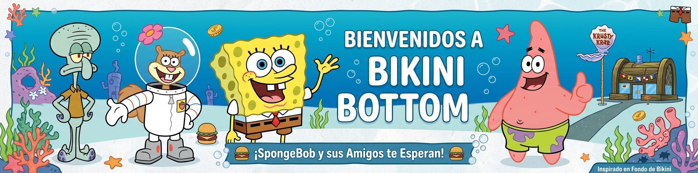
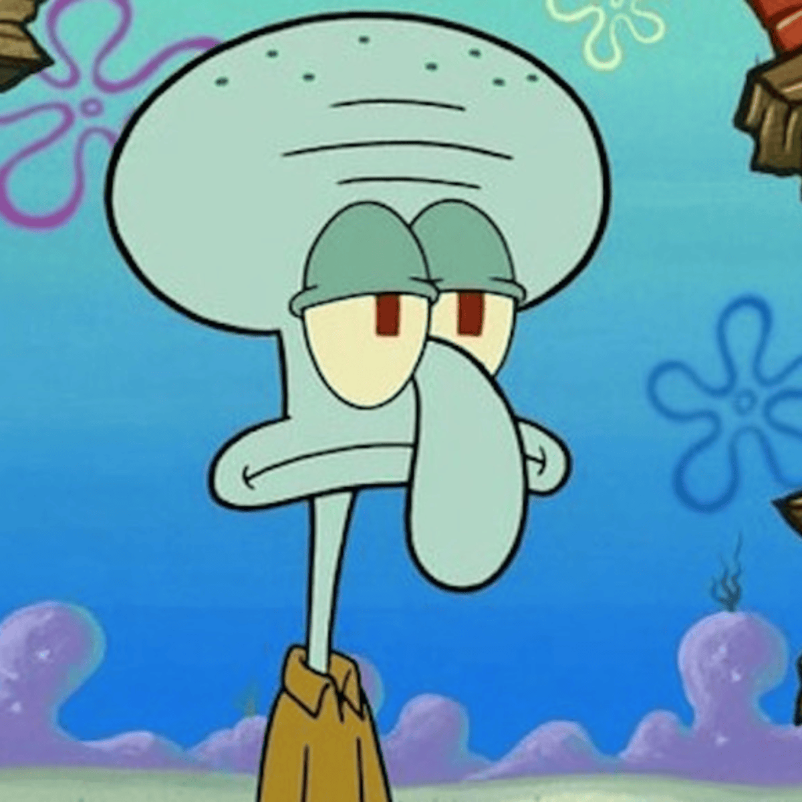

Bob Esponja
Cocinero en el Crustáceo CascarudoUna esponja marina alegre, optimista y extremadamente trabajadora que vive en una piña con su caracol Gary.

Explora los personajes más icónicos de la serie animada "Bob Esponja Pantalones Cuadrados".
Una esponja marina alegre, optimista y extremadamente trabajadora que vive en una piña con su caracol Gary.

Mejor amigo de Bob Esponja,vive bajo una esponja.

cajero y clarinetista.

El propietario del Crustáceo Cascarudo .

Una amiga de Bob Esponja que vive en el fondo del océano.

dueño del valde de carnada.

El mejor amigo de Bob Esponja y su fiel compañero de aventuras.

instructora de la escuela de Bob Esponja.